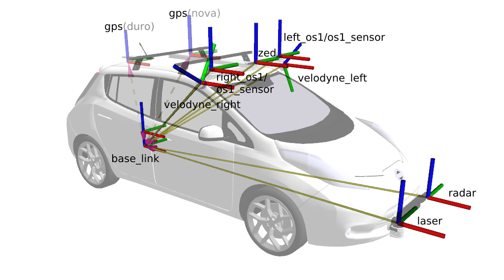
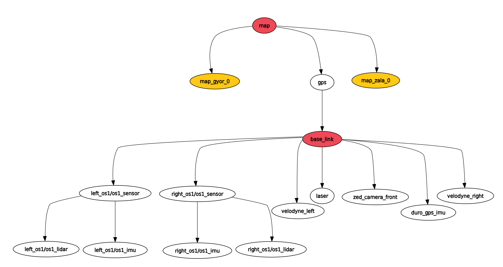

Bevezetés¶
ROS-ben (és álatalában robotikában) a transformok határozzák meg a hogy, mi merre található az adott vonatkozatási ponttól (frame). Több transzform leírhatja például egy robotkar mozgását vagy épp egy jármű és szenzorai helyzetét a térben.
Merev test mozgása¶
Merevnek tekinthető az a test, mely pontjainak távolsága mozgás során nem változik, vagyis bármely két pontjának távolsága időben állandó.
- Merev test alakja, térfogata állandó.
- Merev test térbeli helyzete megadható bármely 3 nem egy egyenesbe eső pontjának helyzetével.
- A test helyzetét szemléletesebben megadhatjuk egy tetszőleges pontjának 3 koordinátájával (pozíció) és a test orientációjával.
- Merev testek mozgásai két elemi mozgásfajtából tevődnek össze: haladó mozgás (transzláció) és tengely körüli forgás (rotáció)
- Transzlációs mozgás során a test minden pontja egymással párhuzamos, egybevágó pályát ír le, a test orientációja pedig nem változik.
- Rotáció során a forgástengelyen lévő pontok pozíciója nem változik, a test többi pontja pedig a forgástengelyre merőleges síkokban körpályán mozog.
Rotáció szemléltetése Forrás: University of Illinois
Az alábbiakban egy rövid (~9 perc), de hasznos videó látható a témáról:
Transzformációk¶
A pose (póz) a pozíció (elhelyezkedés) és orientáció (irány) összessége. Amennyiben egy térbeli pose-t transzformálunk (mozgatunk és forgatunk) egy másik pose keletkezik. Ez a két pose egymáshoz képest két transzformációs frame. Ilyen transzformációs frame-k írják le a teljes robotikai rendszert.
- Pozíció: 3 elemű offszet vektor (
x,yész3D-ben). - Orientáció: több reprezentációt használhatunk:
- 4 elemű quaternion (erről később)
- 3 elemű Euler-szögek: roll (dőlés, gurulás, ψ): pitch (bólintás, θ), yaw (legyezőmozgás, φ) wolfram alpha
- 3 x 3 elemű rotációs matrix
Például a Nissan Leaf base_link framejéhez képest a következő fontosabb framek találhatóak meg:
 Frame-k a járművön
Például a járműves és mobil robotos környezetben gyakran szeretnénk tartani magunkat ahhoz a konvencióhoz, hogy a globális térképet map frame-nek, a jármű / robot hátsó tengelyét base_link-nek hívjuk. A map és a base_link közötti megfeleltetés történehet GPS, NDT matching, Kálmán filter, odometria és számos további módon. Ezt a követező példa szemlélteti:
graph TD
%% Define first column
direction TB
map1([ /map]):::light
gps([ /gps]):::light
base_link1([ /base_link]):::light
velodyne_left([ /velodyne_left]):::light
zed_front([ /zed_front]):::light
laser([ /laser]):::light
%% Connections for the first column
map1 -.->|dynamic| gps
gps -->|static| base_link1
base_link1 -->|static| velodyne_left
base_link1 -->|static| zed_front
base_link1 -->|static| laser
%% Define second column
direction TB
map2([ /map]):::light
ndt_map([ ndt_map]):::light
base_link2([ base_link]):::light
sensor_a([ sensor_a]):::light
sensor_b([ sensor_b]):::light
%% Additional sensors can be represented by dots
dots2([ ...]):::light
%% Connections for the second column
map2 -.->|dynamic| ndt_map
ndt_map --> base_link2
base_link2 --> sensor_a
base_link2 --> sensor_b
base_link2 --> dots2
%% Define third column
direction TB
map3([ lexus3/map]):::light
kalman_f([ lexus3/kalman_f]):::light
base_link3([ lexus3/base_link]):::light
%% Representing additional connections with dots
dots3a([ lexus3/...]):::light
dots3b([ lexus3/...]):::light
dots3c([ lexus3/...]):::light
dots3d([ lexus3/...]):::light
%% Connections for the third column
map3 -.->|dynamic| kalman_f
kalman_f --> base_link3
base_link3 --> dots3a
base_link3 --> dots3b
base_link3 --> dots3c
dots3c --> dots3d
classDef light fill:#34aec5,stroke:#152742,stroke-width:2px,color:#152742
classDef dark fill:#152742,stroke:#34aec5,stroke-width:2px,color:#34aec5
classDef white fill:#ffffff,stroke:#152742,stroke-width:2px,color:#152742
classDef red fill:#ef4638,stroke:#152742,stroke-width:2px,color:#fffPélda TF tree
GPS használata esetén nagyvonalakban a következő példa alapján kell elképzelni a frameket. A map a globális térkép, viszont a gps helyzetét is tudjuk ehhez képest. (Megjegyzés: a 2020.A senzor összeállításban 2 GPS is van, ezek kölönböző helyen találhatóak, mérni tudnak párhuzamosan, de csak egy transzform határozhatja meg a base_link helyzetét. Ezt az 1. ábrán a szaggatott nyilak jelzik.) Innen már egy további (statikus) transzformációval kapható a base_link (a hátsó tengely). További statikus transzformációkkal kaphatók a szenzorok a példában a left_os1/os1_sensor látható.
 A TF tree 2d koordinátarendszerben, vizuális példa
A TF tree 2d koordinátarendszerben, vizuális példa
A transformok a tf topicaban hirdetődnek, azonban például az MPC szabályzó egy current_pose nevű topicot használ a szabályzás megvalósításához. Ezt úgy oldottuk meg, hogy a base_link frame értékeit current_pose topic-ként is hirdetjük. A frame transzlációja a topic pozícója, illetve a frame rotációja a topic orientációja.
Nagy transzformoknál az RVIZ megjelenítője nem működik pontosan (https://github.com/ros-visualization/rviz/issues/502). Mivel az ROS SI mértékegységeket használ, így métert is, a GPS esetén célszerű az UTM (wikipedia-utm) koordinátarendszer használata. Ez értelemszerűen nagy értékű koorinátákkal számol. Ahhoz, hogy ezt az ellentmondást feloldjuk célszerű kisebb traszformokat megjeleníteni. Így például Győrhöz (map_gyor_0) és Zalához (map_zala_0) egy fix statikus transformot, hirdetni, amihez képest már szépen működik az RVIZ megjelenítője. A következő ábra ezt szemlélteti, illetve egy kicsit részletesebb szenzorrendszert mutat be.
graph TB
%% Define main components
map([ map]):::red
map_gyor_0([ map_gyor_0]):::dark
map_zala_0([ map_zala_0]):::dark
gps([ gps]):::light
base_link([ base_link]):::red
%% Define sensors and other components
velodyne_left([ velodyne_left]):::light
velodyne_right([ velodyne_right]):::light
laser([ laser]):::light
zed_camera_front([ zed_camera_front]):::light
duro_gps_imu([ duro_gps_imu]):::light
%% OS1 sensors and their subcomponents
left_os1_sensor([ left_os1/os1_sensor]):::light
left_os1_lidar([ left_os1/os1_lidar]):::light
left_os1_imu([ left_os1/os1_imu]):::light
right_os1_sensor([ right_os1/os1_sensor]):::light
right_os1_lidar([ ...]):::light
right_os1_imu([ ...]):::light
%% Connections among main components
map --> map_gyor_0
map --> map_zala_0
map ---> gps
gps --> base_link
%% Connections from base_link to sensors
base_link ---> velodyne_left
base_link ---> velodyne_right
base_link ---> laser
base_link --> zed_camera_front
base_link --> duro_gps_imu
base_link ----> left_os1_sensor
base_link ----> right_os1_sensor
%% Connections for OS1 sensors
left_os1_sensor --> left_os1_lidar
left_os1_sensor --> left_os1_imu
right_os1_sensor --> right_os1_lidar
right_os1_sensor --> right_os1_imu
classDef light fill:#34aec5,stroke:#152742,stroke-width:2px,color:#152742
classDef dark fill:#152742,stroke:#34aec5,stroke-width:2px,color:#34aec5
classDef white fill:#ffffff,stroke:#152742,stroke-width:2px,color:#152742
classDef red fill:#ef4638,stroke:#152742,stroke-width:2px,color:#fff
Az rqt_tf_tree által megjelenített TF fa
Az ábrán csak a map gps transzform változó, a többi statikus. Statikus transzformot hirdetni launch fájlban például a /base_link és a left_os1/os1_sensor következőképp lehet (lásd 3. ábra)
Node(
package='tf2_ros',
executable='static_transform_publisher',
name='ouster_left_tf_publisher',
output='screen',
arguments=[
'--x', '1.769',
'--y', '0.58',
'--z', '1.278',
'--roll', '3.1415926535', # or use math.pi
'--pitch', '0.0',
'--yaw', '0.0',
'--frame-id', '/base_link',
'--child-frame-id','left_os1/os1_sensor'
],
),
<node
args="1.769 0.58 1.278 3.1415926535 0.0 0.0 /base_link left_os1/os1_sensor 50"
name="ouster_left_tf_publisher"
pkg="tf"
type="static_transform_publisher"
/>
Ugyanezek parancsként kiadva terminálból:
ros2 run tf2_ros static_transform_publisher \
--x 1.769 --y 0.58 --z 1.278 \
--roll 0.0 --pitch 0.0 --yaw 3.1415926535 \
--frame-id left_os1/os1_sensor --child-frame-id base_link
rosrun tf static_transform_publisher \
1.769 0.58 1.278 \
3.1415926535 0.0 0.0 \
/base_link left_os1/os1_sensor 50
Itt az utolsó argumentum ROS 1-nél 50 ms, tehát 20 Hz-en hirdette a ugyanazt a transzformációt. Ez nem a legszerencsésebb, az ROS 2 ebben is fejlődött, ott elég egyszer hirdetni ugyanezt.
Példa a statikus transzform launch fájlra: tf_static.launch
Mátrix szorzás¶
A 3D transzformáció (de természetesen a 2D is) egy mátrix segítségével, egész pontosan mátrisx szorzással írható le. Például, ha egy objektumot elmozdítunk egy adott távolságra, akkor azt egy forgatómátrix segítségével írhatjuk le. A forgatómátrix 3 dimenzióban egy 3x3-as mátrix, amely a forgatás irányát és mértékét határozza meg.
Forrás: Robotic Systems, University of Illinois
Danger
A python notebook-ot és a mátrixszozás vizualizációt oktatási céllal linkeltük. ROS 2-ben rengeteg funkciót ad a tf2 és kapcsolódó megoldásai, így nem kell "kézzel" transzlációt és rotációt írni. Transzformációkat például le lehet kérdezni 2 frame között anélkül is, hogy tudnánk pontosan hány frame-n kereszül kapcsolódnak. Az ROS 2 ezt kényelmesen biztosítja. Erről bővebben itt lehet olvasni
Homogén koordináták¶
A homogén koordináták kényelmes reprezentációt nyújtanak a merevtest transzformációkhoz, mint a lineáris transzformációk egy kibővítéseként a térben. Ráadásul kompaktan reprezentálják a helyzetfüggő és irányfüggő mennyiségek közötti különbséget. Az ötlet az, hogy minden pontot kiegészítünk egy további homogén koordinátával, amely 1, ha helyzetfüggő, és 0, ha irányfüggő. Ezt az műveletet a "hat" (kalap) operátorral (^) jelöljük.
Quaternion (kvaterniók)¶
A roll pitch yaw (Euler szögek) alternatívája, a komplex számokhoz hasonló kiterjesztéssel.
Demonstáció: www.quaternions.online
Előnyei: - Numerikus stabilitás: A lebegőpontos reprezentációból adódó kis numerikus hibák sokszor ismétlődve egyre nagyobb hibákhoz vezethetnek Euler szögek esetén. Például egy forgatás pár század fokos pontatlansága ezrez vagy tízezres ismétléssel komoly hibává adódhat össze. Quaternion-oknál ez a komlex reprezentáció és a normált alak miatt sokkal kisebb. - Gyors számítás: A kvaterniók hatékonyan reprezentálják a 3D térbeli forgatásokat, és sokszor gyorsabbak és stabilabbak lehetnek, mint más reprezentációs módszerek, például Euler-szögek. - Pontosság: - Nem érzékeny a "Gimbal lock" prblémára: Az Euler-szögek esetében előfordulhat egy olyan helyzet, amikor a rotációk szenzitívekké válnak bizonyos irányokban, ami korlátozhatja a számítások pontosságát. A kvaterniók ezt a problémát elkerülik. - Könnyen interpolálhatók: A kvaterniók segítségével könnyen lehet interpolálni a két rotációt közöttük, ami fontos az animációk simaságának megőrzése szempontjából. Sőt nem lineáris interpolációkhoz is használhatók. A kvaterniók lehetővé teszik a nem lineáris interpolációkat is, ami olyan animációk létrehozásához hasznos, ahol a rotáció nem lineárisan változik az időben.
Hátrány: - Nem intuitív az ember számára: Nehezebben érthetők, mint például az Euler-szögek, amiket megszoktunk a 3 tengely körüli forgatásra.
ROS 2-ben például így lehet átalakítani roll, pitch, yaw értékeket quaternion-ra.
#include <tf2_geometry_msgs/tf2_geometry_msgs.hpp>
tf2::Quaternion tf2_quat;
tf2_quat.setRPY(roll, pitch, yaw);
További információ erről itt olvasható.
Konvenciók¶


Koordinátarendszerek (GPS/GNSS)¶
A WGS84 vagy World Geodetic System 1984 egy globális referencia rendszer a térképészetben, geolokációban, navigációban és a GPS (Global Positioning System) rendszerben történő használatra. Ez egy szabványos koordináta rendszer, amelyet a földrajzi szélesség, hosszúság és tengerszint feletti magasság megadására használnak. A földrajzi szélességi (latitude) körök vízszintesen futnak, és fokokban adják meg egy pont helyét a Föld felszínén az egyenlítőtől (0 fok szélesség) északra vagy délre. A hosszúsági körök (longitude) függőlegesen futnak, és fokokban adják meg egy pont helyét a Föld felszínén a keleti vagy nyugati nullameridiántól (0 fok hosszúság). A nullameridián a 0 fok hosszúságánál található, és Londonon Greenwich városrészén keresztül halad. A hosszúsági értékek -180 foktól +180 fokig terjednek, az 180 foknál pedig az Északi és Dél-Keleti hosszúságok összekapcsolódnak. A mérésadat fájl navsatfix topicja (sensor_msgs/msg/NavSatFix) ebben a formátumban került mentésre.
Ennek alternatívája az UTM vetületi rendszer, amely nem fokokban, hanem méterekben számol. Az UTM, vagyis az Egyesített Térképi Projekció (Universal Transverse Mercator), egy térképi projekciós rendszer, amelyet a térképek készítésére és a navigációhoz használnak. A világ különböző zónáit egy sor speciális hengertérképen ábrázolják, ahol a hosszúsági és szélességi vonalak egyenesek. Ahogy lejjebb látható, Magyarország 4 UTM zónába esik: 33U, 34U, 33T és 34T. Az UTM zónák 6 fokos szélességi sávokra oszlanak szét, ahol minden sávban az ábrázolás egy transzverzális Merkátor-projekción alapuló hengertérképen történik. Az UTM rendszer előnye, hogy egyszerű koordináta-rendszert biztosít, ami kis torzulással rendelkezik a zónákon belül. Ezért sokszor használják katonai térképek, topográfiai térképek, navigációs rendszerek és más térképkészítési alkalmazásoknál. Például a mérésadatoknál a jellemzően current_pose végződésű topicja (geometry_msgs/msg/PoseStamped) ebben a formátumban érkező adat.
Források¶
- articulatedrobotics.xyz/ready-for-ros-6-tf
- Kris Hauser: Robotic Systems University of Illinois at Urbana-Champaign
- Óbudai Egyetem ABC-iRobotics
- docs.ros.org/en/humble/Tutorials/Intermediate/Tf2/Tf2-Main.html
- docs.ros.org/en/humble/Tutorials/Intermediate/Tf2/Quaternion-Fundamentals.html
- mathworld.wolfram.com/EulerAngles.html